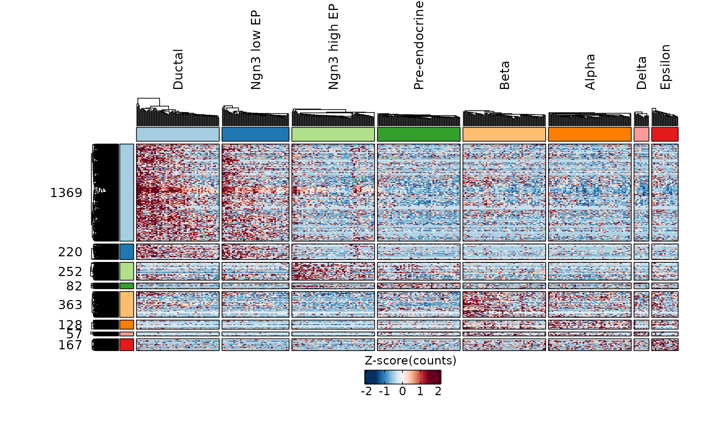
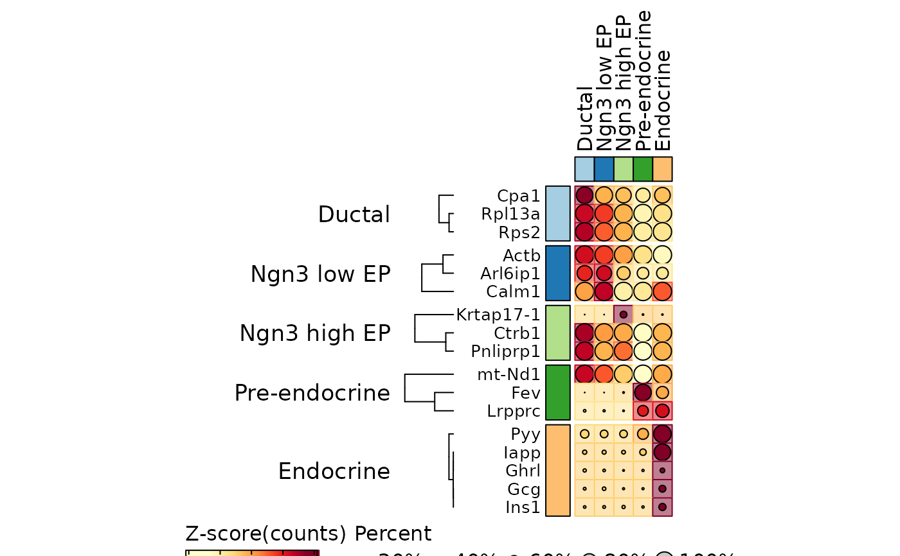

RunDEtest.RdDifferential gene test
RunDEtest(
srt,
group_by = NULL,
cell_group1 = NULL,
cell_group2 = NULL,
FindAllMarkers = TRUE,
FindPairedMarkers = FALSE,
test.use = "wilcox",
only.pos = TRUE,
fc.threshold = 1.5,
min.pct = 0.1,
max.cells.per.ident = Inf,
latent.vars = NULL,
slot = "data",
assay = "RNA",
BPPARAM = BiocParallel::bpparam(),
progressbar = TRUE,
force = FALSE,
...
)A Seurat object
group_by
cell_group1
cell_group2
Whether to find markers across all cells.
Whether to find markers between pairs of the cell groups.
fc.threshold
min.pct
force
library(dplyr)
data(pancreas1k)
pancreas1k <- RunDEtest(pancreas1k, group_by = "CellType")
#> [2022-06-21 07:02:51] Start DEtest
#> Threads used for DE test: 1
#> Perform FindAllMarkers(wilcox)...
#>
|
| | 0%
|
|======================================================================| 100%
#>
#> [2022-06-21 07:03:10] DEtest done
#> Elapsed time: 18.41 secs
# Heatmap
de_filter <- filter(pancreas1k@tools$DEtest_CellType$AllMarkers_wilcox, p_val_adj < 0.05 & avg_log2FC > 1)
ExpHeatmapPlot(pancreas1k, genes = de_filter$gene, gene_groups = de_filter$group1, cell_group_by = "CellType")
#> 'magick' package is suggested to install to give better rasterization.
#>
#> Set `ht_opt$message = FALSE` to turn off this message.

# Dot plot
de_top <- de_filter %>%
group_by(gene) %>%
top_n(1, avg_log2FC) %>%
group_by(group1) %>%
top_n(3, avg_log2FC)
ExpDotPlot(pancreas1k, genes = de_top$gene, gene_groups = de_top$group1, cell_group_by = "CellType")
